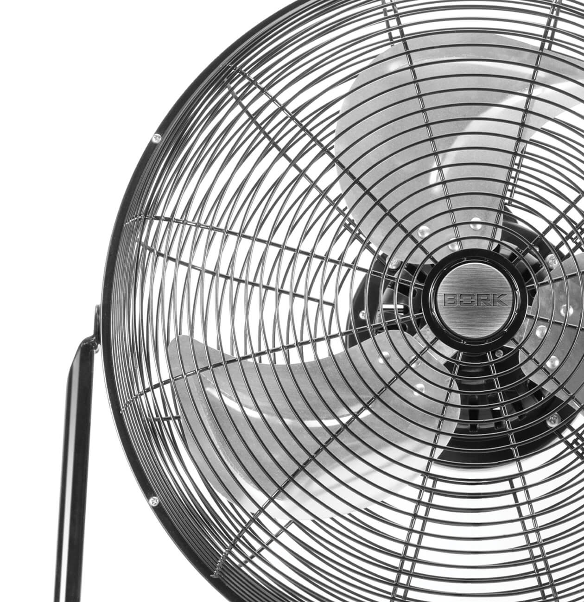
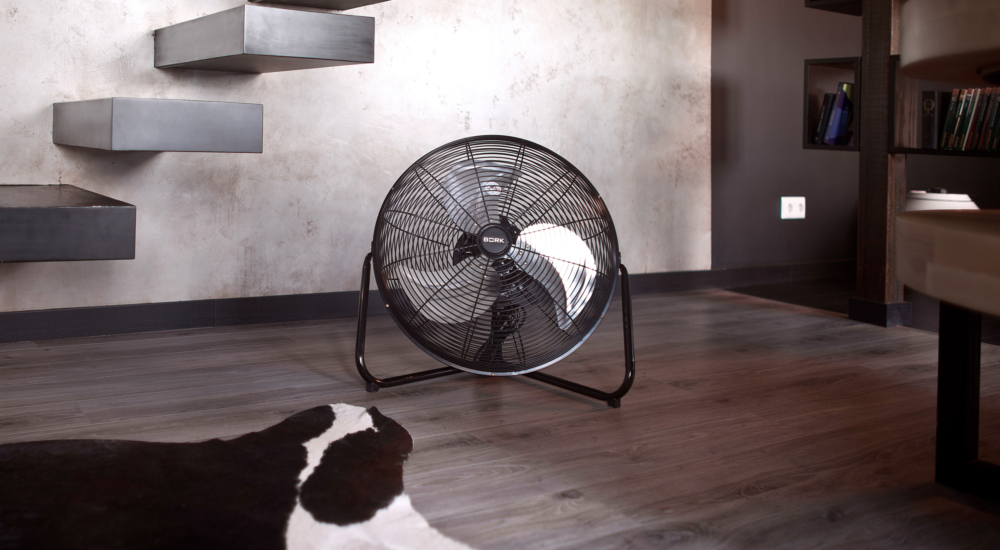

Напольный вентилятор BORK P511
Эффективные технологии проветривания и строгий дизайн.
Система планетарного вращения
Впервые в вентиляторах применена запатентованная система планетарного вращения лопастей. Корпус и обрешетка вентилятора жестко фиксированы и остаются неподвижными, тогда как лопасти вентилятора вращаются во всех плоскостях сферического объема, создавая турбулентные потоки воздуха и обеспечивая ему максимальную циркуляцию в помещении.
Данная технология позволяет при меньших энергозатратах увеличить циркуляцию воздуха на 40%.
Безопасность и надежность
Строгий классический дизайн в металле продолжает характерное для компании стилевое решение, обогащенное конструктивными инновациями. Корпус решетка и лопасти, выполненные из металла, добавляют модели прочности и повышают ее безопасность.
Равномерность распределения температуры в помещении
На максимальной скорости вентилятор BORK P511 прокачивает через себя большой объём воздуха. Направив BORK P511 в потолок обеспечивается эффективная циркуляция воздуха в помещении. Это гарантирует равномерность температуры воздуха между полом и потолком, исключая неприятные ощущения.
И при кондиционировании, и при обогреве, по законам физики горячий воздух поднимается вверх, к потолку, а холодный, соответственно, опускается к полу, вызывая, как минимум, неприятные ощущения. Вы можете повысить эффективность вашего кондиционера и обогревателя. Другими словами, вы можете повышать или понижать термостат на 2 или 3 градуса и тратить меньше энергии.
Технические характеристики

Мощность: 44 Вт
Число режимов: 1
Число скоростей: 3
Воздушный удар: 6 м
Вес: 5,1 кг
Срок гарантии: 1 год
Диаметр лопастей: 45 см
Угол поворота: 110°
Уровень шума: 40 дБ
Длина кабеля: 1,8 м
Страна производства: Вьетнам